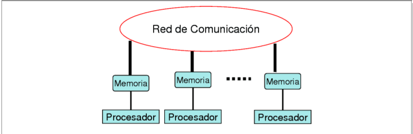
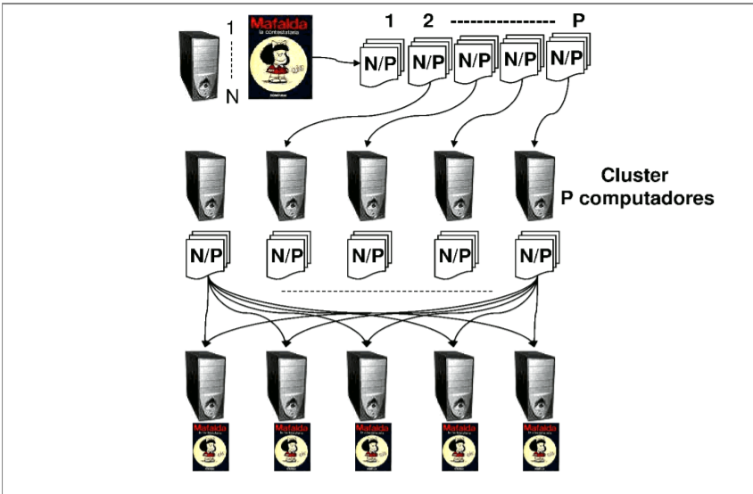
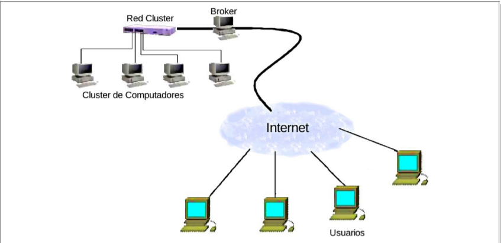
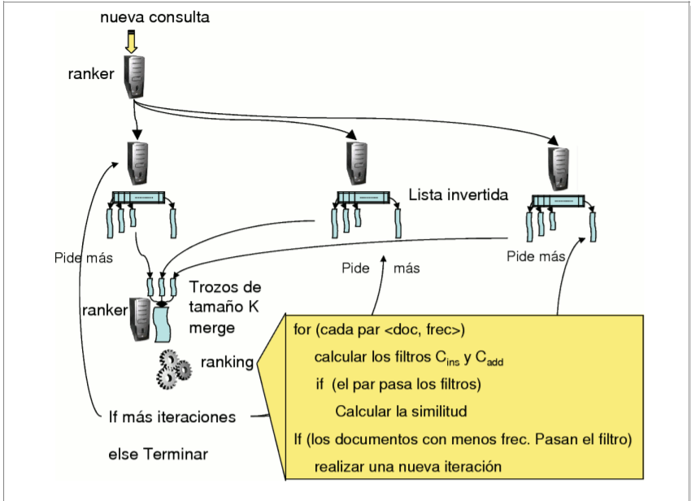
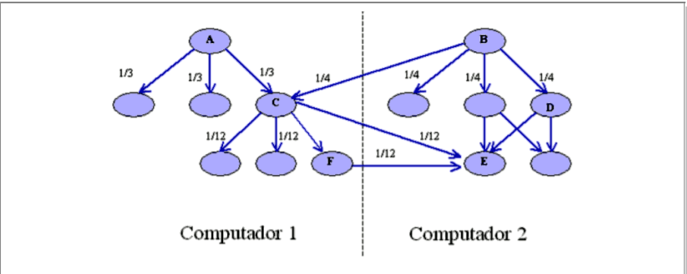

20 septiembre, 2021
Un cluster está compuesto de un conjunto de computadores interconectados mediante una red que les permite enviarse mensajes entre ellos,en el cluster cada computador tiene su propia memoria RAM y disco para almacenar información,Cada computador puede
leer y escribir información en su propia memoria y si necesita información almacenada en otro computador debe enviarle un mensaje y esperar la respuesta.

20 septiembre, 2021
Máquinas de búsqueda y Clusters

En un cluster utilizado como máquina de búsqueda, cada computador
tiene su propia memoria RAM y disco para almacenar una parte de la información del sistema completo

En el siguiente paso, todos los
computadores en paralelo leen desde su memoria las listas invertidas asociadas con las palabras que forman la consulta del usuario, las máquinas de búsqueda más conocidas se reciben alrededor de
600 consultas por segundo. Una manera de explotar al máximo la capacidad
de los computadores del cluster es hacerlos trabajar en paralelo.

La Web mundial es inmensamente grande y los enlaces a Internet tienen limitaciones de velocidad de transferencia de datos, por lo tanto no es
posible bajar toda la Web en un par de horas.

Esto muestra que algunas veces hacer trabajar a muchos computadores
en paralelo de manera eficiente involucra pensar en la solución a problemas
que no surgen cuando se trabaja con un solo computador.